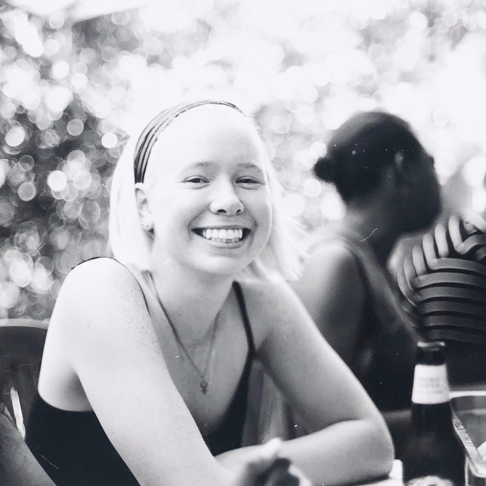

Work
About
Anna Greene is a product designer based in New York.

Edstruments
Currently as a UI/UX Designer, I’m exploring how to create compelling and intuitive dashboards about school data.
Case Study available upon request.
Superfund Search
As lead designer & front-end programmer, created a stand-alone tool about EPA toxic waste sites.
Case Study
Live Website
greene.wrld
I created the brand and website for an e-commerce board sports company.
Case Study